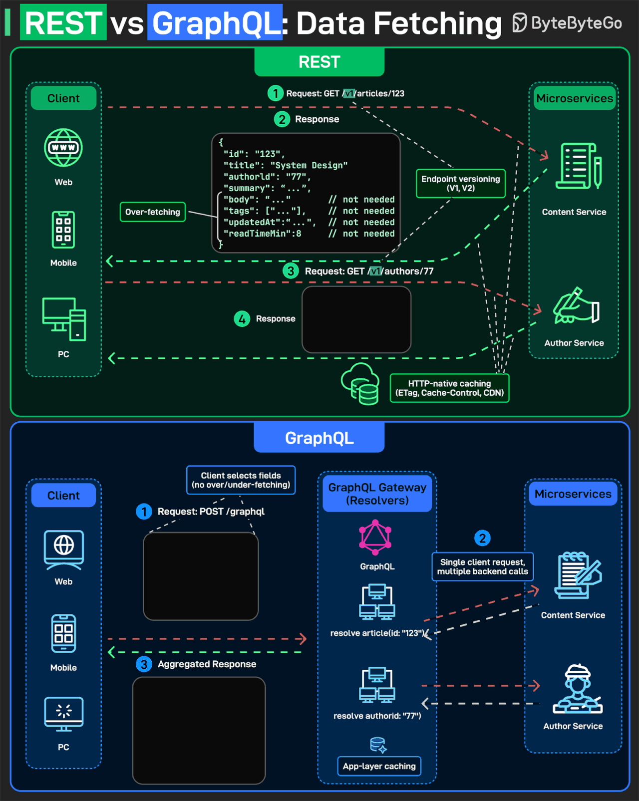

System Design Mastery
Master scalable systems with premium insights
🔌 REST vs GraphQL: Choosing the Right API for Microservices
👉 Interviewer asks:
Design an API
layer for a system where clients (web/mobile) need to fetch data from multiple microservices
(e.g., User, Orders, Products).
Would you use REST or GraphQL?
🔵 REST (Representational State Transfer)
📌 Core Idea:
Server decides what data is returned
⚙️ Flow:
Client calls multiple endpoints:
/users/123/orders?userId=123/products
✅ Strengths of REST:
- 1. Simplicity 👍
- Easy to design
- Easy to understand
- Works well with HTTP standards
- 2. Strong Caching Support 🔥
- Uses: ETag, Cache-Control, CDN caching
- 👉 Huge performance advantage
❌ Problems in REST:
- 1. Over-Fetching — Getting extra data you don't need
- 2. Under-Fetching — Need multiple API calls
Example:
GET /articleGET /authorGET /comments
🟣 GraphQL
📌 Core Idea:
Client decides what data is needed
⚙️ Flow:
Client sends single query:
{
user(id: "123") {
name
orders {
id
product {
name
}
}
}
}GraphQL server:
- Calls User Service
- Calls Order Service
- Calls Product Service
- Combines response
✅ Strengths of GraphQL:
- 1. No Over / Under Fetching 🔥 — Client asks exactly what it needs
- 2. Single Request → Multiple Data — Aggregates data from multiple services
- 3. Strong for Microservices — Acts like API Gateway layer
- 4. Schema-Based API — Strong typing, Self-documenting
❌ Problems in GraphQL:
- 1. Complex Server Logic ⚠️ — Resolver logic
- 2. Caching is Hard 😬 — No simple HTTP caching
- 3. Performance Risks — Bad queries = heavy DB load
- 4. Monitoring is Harder — Hard to track "which endpoint is slow"

REST vs GraphQL Architecture Comparison
🎯 When to Use REST
👉 Use REST when:
- Simple CRUD APIs
- Strong caching needed
- Backend-driven system
- Public APIs
🎯 When to Use GraphQL
👉 Use GraphQL when:
- Multiple data sources
- Microservices architecture
- Mobile apps (reduce network calls)
- Complex UI requirements
🧠 Important Points
🔹 BFF Pattern (Backend for Frontend)
👉 GraphQL often used as: BFF layer between frontend & microservices
🔹 N+1 Problem
👉 GraphQL can cause: Multiple
DB queries per request
✔ Solution: DataLoader
🔹 Versioning
REST → /v1,
/v2
GraphQL → No versioning (schema evolves)
🔹 Error Handling
REST → HTTP status
codes
GraphQL → Always 200 (errors in response body)
⚖️ REST vs GraphQL Comparison
| Factor | REST | GraphQL |
|---|---|---|
| Data Fetching | Multiple endpoints | Single endpoint |
| Over-fetching | Common problem | Eliminated |
| Caching | HTTP caching (easy) | Application-level (complex) |
💬 Interview Answer
REST is simple, cache-friendly, and works well for resource-based APIs with strong HTTP support, but it can suffer from over-fetching and multiple requests.
GraphQL allows clients to fetch exactly the data they need in a single request, making it ideal for complex and microservice-based systems.
The choice depends on system requirements — REST for simplicity and caching, GraphQL for flexibility and aggregation.
If the system involves multiple microservices and clients need aggregated data, I would use GraphQL as a gateway to reduce multiple network calls and avoid over-fetching.
However, for simpler use cases or where strong caching is required, REST is more suitable.
In practice, I would use a hybrid approach where backend services expose REST APIs and a GraphQL layer sits in front.
🧠 Interview Tips
- Discuss trade-offs — Caching, complexity, team skills
- Consider the client — Mobile vs Web vs Internal
- Mention N+1 problem — For GraphQL data loading
- Talk about caching strategies — Often the deciding factor
- Hybrid approach — Show practical flexibility